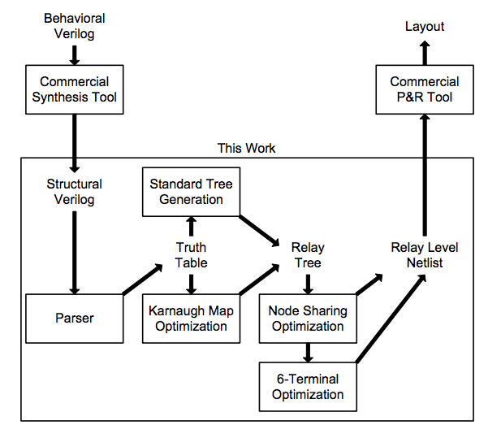

As CMOS scaling begins to reach its fundamental limits, micro-electro-mechanical
(MEM) relays provide an attractive option for improvements in energy efficiency due to
their low leakage and near ideal I-V characteristics. However, mechanical actuation of
MEM relays introduces significantly more delay than traditional CMOS electrical delay.
Circuit designers have mitigated this effect in relay based circuits by arranging for all
mechanical actuations to happen simultaneously. However, the design of these
customized circuit topologies requires significant time and effort. A general method for
designing optimized relay circuits with any arbitrary logic function is presented.
Optimizations are performed at the truth table and schematic level to reduce the number
of devices needed in the design. These circuit techniques are implemented in a synthesis
tool to automate the design process. The resulting circuits match custom designs in delay
and device count while minimizing the amount of design effort required by the user. The
output circuits can easily be ported to commercial place and route tools creating a simple
automated MEM relay circuit design flow.